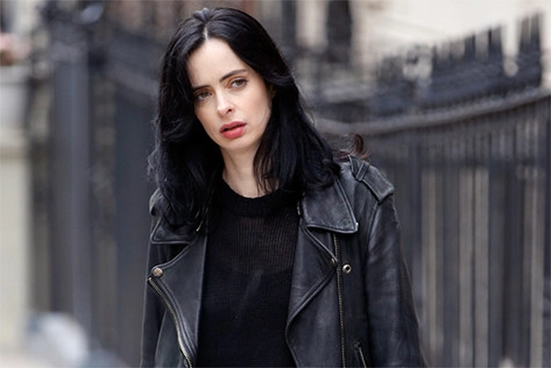

Desde que sua curta vida como super-heroína acabou de forma trágica, Jessica Jones vem reconstruindo sua carreira e passou a levar a vida como detetive
Começou o trabalho particular no bairro de Hell's Kitchen, em Nova York, na sua própria agência de investigações, a Alias Investigations.
Traumatizada por eventos anteriores de sua vida, ela sofre de Transtorno de Estresse Pós-Traumático, e tenta fazer com que seus super-poderes passem despercebidos pelos seus clientes. Mas, mesmo tentando fugir do passado, seus demônios particulares vão voltar a perseguí-la, na figura de Kilgrave, um obsessivo vilão que fará de tudo para chamar a atenção de Jessica.

forma extremamente básica, o que é revelado por suas roupas e pelo apartamento sem grandes adereços. Fechada, com cara de poucos amigos e sempre com uma resposta sarcástica para evitar contatos íntimos com os outros, ela é quase uma anti-heroína.
Vive sempre com uma garrafa de whisky à mão, mas nem por isso deixa de ser competente no que faz. Porém, um caso trazido por pais desesperados em busca da filha que desapareceu vai trazer à tona o passado da protagonista, que envolve um lunático obcecado por ela. Kilgrave (David Tennant) é o melhor vilão da Marvel a aparecer em suas produções cinematográficas e da telinha. Com seu poder de obrigar qualquer um a fazer o que deseja apenas com uma frase proferida, ele não quer dominar o mundo ou se vingar por algum motivo infantil. Kilgrave apenas quer Jessica, a única coisa que ele não consegue ter.

É uma personagem fictícia que aparece nas histórias em quadrinhos publicadas pela Marvel Comics. Criada pelo escritor Brian Michael Bendis e pelo artista Michael Gaydos, a personagem fez sua primeira aparição em Alias #1 (Novembro de 2001) como uma super heroína aposentada que começou a trabalhar na Alias Investigações. Jones iniciou, então, mais duas séries, (Alias e The Pulse). Junto de seu marido, Luke Cage, com quem tem uma filha, tornou-se membro dos Novos Vingadores durante a saga da Marvel em 2010, a Era Heroica. Em vários momentos de sua história, Jessica usou pseudônimos como Safira, Paladina e Poderosa.
Todo da pagina>